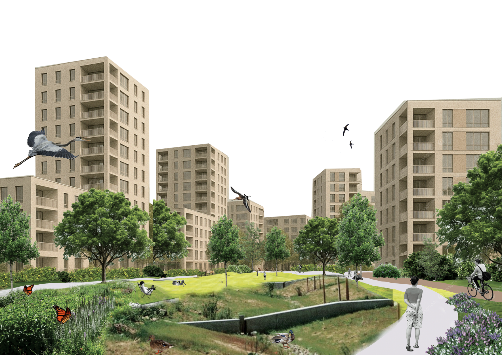
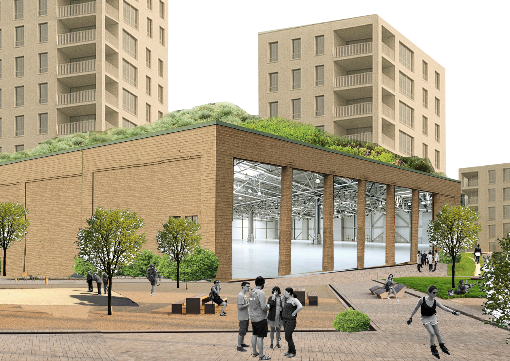
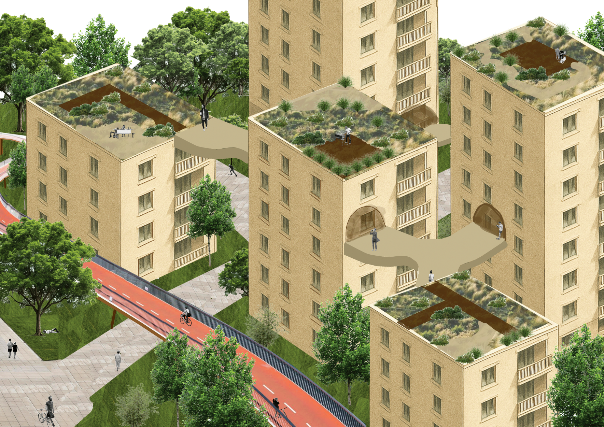
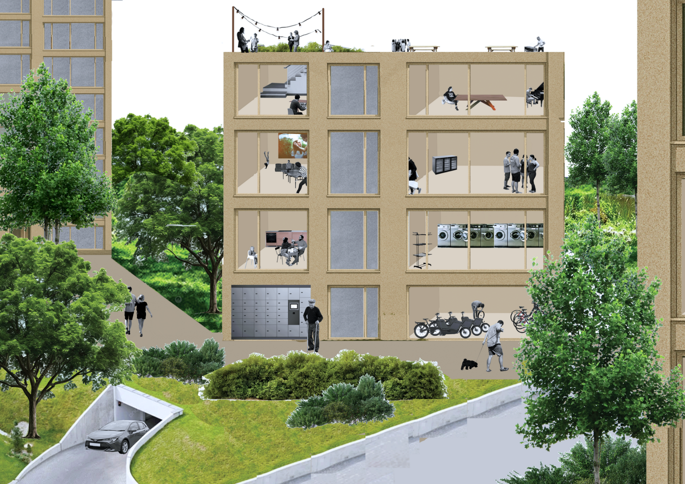

Zaanstraat — Visualising a New Neighbourhood
As part of an MSc project in collaboration with the Municipality of Amsterdam, our team explored ideas for the future Zaanstraat neighbourhood, focusing on green spaces, shared facilities and community life.
Together with a classmate, I created a series of architectural collages to bring these ideas to life. We deliberately kept the visualisations open and exploratory, showing possible ways the neighbourhood could develop rather than presenting a fixed design.


